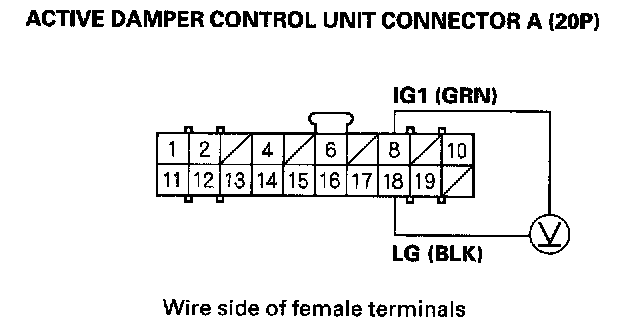

DTC 14-B
DTC 14-B: Active Damper Control Unit Power Supply Circuit Malfunction1. Turn the ignition switch ON (II).
2. Clear the DTC with the HDS.
3. Start the engine, and raise the engine speed to 2,000 rpm.
4. Check and note IG1 VOLTAGE in the ACTIVE DAMPER SYSTEM DATA LIST with the HDS within 40 seconds after starting the engine.
Was there within 9.3-17.5 V for 30 seconds continuously?
YES - Go to step 9
NO - Go to step 5.
5. Wait 40 seconds.
6. Start the engine, and then raise the engine speed to 2,000 rpms.
7. Measure voltage between active damper control unit connector A (20P) terminal No.8 and terminal No. 18.

Is there battery voltage?
YES - If the voltage is above 17.5 V, check the battery and troubleshoot the alternator regulator circuit, then go to step 8. If the voltage is normal, replace the active damper control unit.
NO - Repair poor connection between under-dash fuse/relay box connector F (14P) terminal No. 8, and active damper control unit connector A (20P) terminal No. 8, or poor ground at G302 and G401, then go to step 8.
8. Clear the DTC with the HDS.
9. Start the engine.
10. Do the DAMPER FORCE OPERATION in the ACTIVE DAMPER SYSTEM INSPECTION MENU with the HDS.
11. Check for DTCs with the HDS.
Is any DTC indicated?
YES - Go to the indicated DTC's troubleshooting.
NO - Troubleshooting is complete.